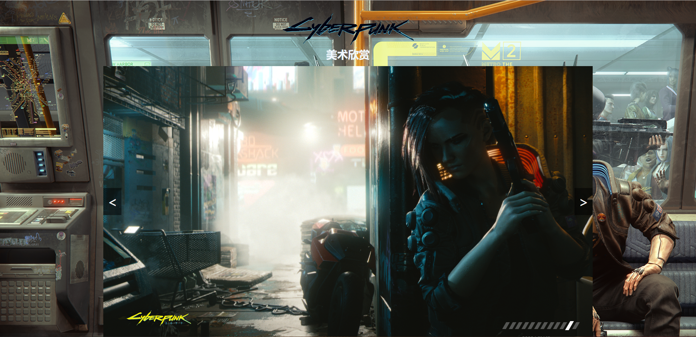

组长&组员：周志昂 软件工程2213班 0223721
网站主题：《赛博朋克2077》，相关的内容介绍，因为2077确实比较上头hhh
网站设计：1.主页，2.世界观介绍，3.人物介绍，4.，美术欣赏，5.实验报告
请点击2查看更多内容
网站内容：
主页：

1.logo用position:fixed定位在视图左上方，并且用z-index:1保证不会被遮挡
2.导航栏同上用了定位和高度保证不会被遮挡，而且具有二级导航栏结构
3.插入了一个宣传视频，增加内容丰富度和可信度
4.利用ul,li列表结构做出的图片排列，图片上有文字悬浮，并且可以引导向四个子页面
(ps:当时做的时候随着页面缩放图片会对不齐页面中间，改了好久才想起来用display:inline-block）
5.页脚的图片是可以直接导向报告页面的
世界观：

1.以图片为背景的页首，大标题加小标题点明内容，导航栏方便浏览其他子网页
2.侧边栏，可以快速定位到指定位置
3.图片向右浮动，文字环绕图片，带小标题方便浏览
人物介绍

1.做成了三列的形式，每个人物做成了卡片的样式，美观方便
2.当调整浏览器大小时，页面会随着改变

美术欣赏：
1.放了个图标看起来可能会更真（？
2.图片起修饰和导航回主页作用
3.背景图片修饰一下显得不单调
4.可以轮换播放的图片，可以点两侧的按键切换图片，切换会有淡入淡出效果（最难写的）
5.可以快速切换的轮换台，而且修饰了一下更加美观
实验报告：
1.点击数字可以浏览对应的内容，这个也好难写（反正我觉得）
最终结果和讨论：
正所谓“实践出真知”，这次实践活动培养了我的动手能力，加深了我对web前端知识的理解，也对如何写出一个成品级网页有了更清醒的认识。 在以后的学习里，我也会牢记这些所学所想，并在充分的实践培养下更上一层楼。
也祝老师新春快乐，新的一年还在看作业老师辛苦了hhh